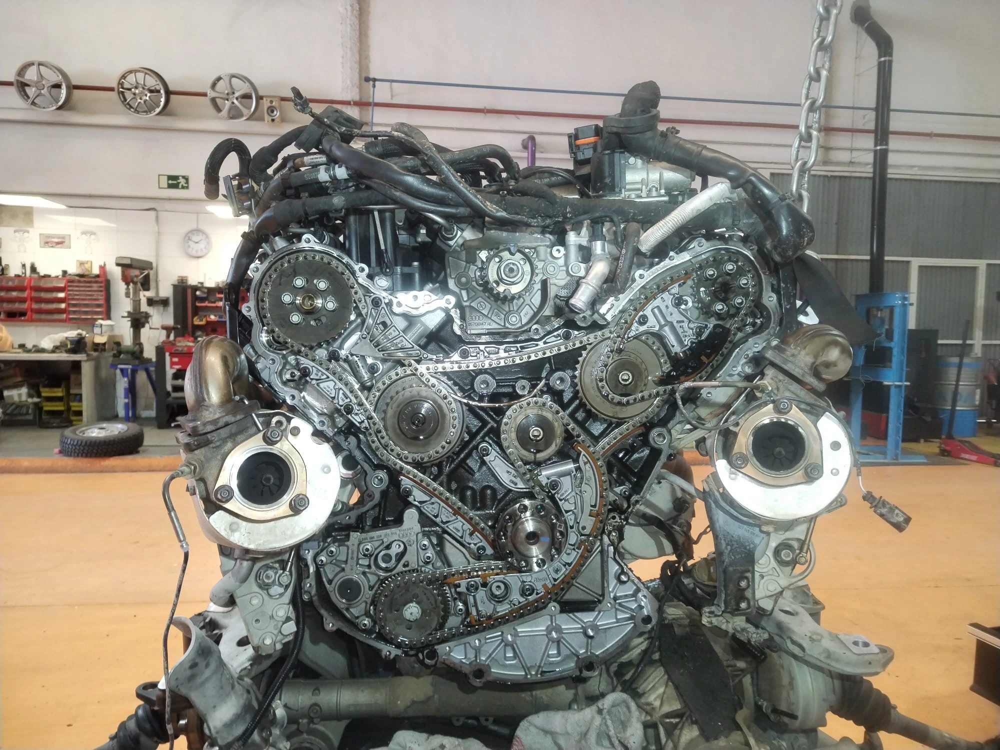

El motor V8 de JavaScript es el componente fundamental que impulsa el rendimiento de Google Chrome y Node.js. Este motor de alto rendimiento se encarga de interpretar y ejecutar el código JavaScript, transformándolo en un lenguaje de máquina que el ordenador puede procesar con eficiencia. Para entender su funcionamiento, podríamos compararlo con un motor V8 de un automóvil de alta gama: potente, eficiente y diseñado para alcanzar un rendimiento óptimo. De igual manera, el motor V8 de JavaScript está optimizado para maximizar la velocidad y eficiencia en la ejecución de aplicaciones web.
La nomenclatura "V8" no es una coincidencia, ya que comparte su nombre con los motores V8 de los automóviles, conocidos por su capacidad para generar una gran potencia y proporcionar una experiencia de conducción superior. En un vehículo, un motor V8 tiene ocho cilindros dispuestos en forma de "V", lo que le permite producir una gran cantidad de energía y velocidad. De manera similar, el motor V8 de JavaScript está diseñado para ejecutar scripts de forma rápida y eficiente, optimizando el rendimiento de las aplicaciones web modernas.
Así como un mecánico ajusta y optimiza un motor V8 de un automóvil para asegurar su funcionamiento óptimo, los ingenieros de software trabajan constantemente en mejorar el motor V8 de JavaScript. Esto incluye innovaciones como la compilación Just-In-Time (JIT), que traduce el código JavaScript en tiempo real, y la gestión avanzada de memoria, que ayuda a evitar retrasos y bloqueos en las aplicaciones. Gracias a estas mejoras continuas, el motor V8 puede manejar aplicaciones web cada vez más complejas y exigentes.
En resumen, el motor V8 de JavaScript y un motor V8 de vehículos comparten más que solo un nombre; ambos representan la cúspide de la eficiencia y el rendimiento en sus respectivos campos. Ambos son esenciales para proporcionar una experiencia fluida y potente, ya sea en la carretera o en la web. La próxima vez que utilice una aplicación web rápida y sin problemas, puede agradecer a este motor V8 digital que opera bajo el capó.